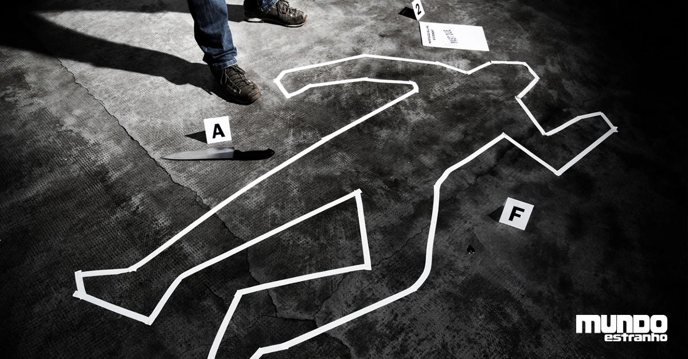

este site falará sobre a "PERICIA CRIMINAL"e alguns casos criminais
Um perito criminal é um profissional especializado em análise científica e investigativa, desempenhando um papel fundamental no sistema de justiça e na resolução de crimes. Seu trabalho envolve a coleta, preservação, exame e interpretação de provas físicas encontradas em cenas de crime. Eles atuam como elos cruciais entre a investigação policial e o ambiente judicial.
Quando acionados para uma investigação, os peritos criminais iniciam sua atuação no local do crime, onde utilizam técnicas específicas para preservar evidências relevantes. Isso inclui fotografar, documentar e coletar itens como impressões digitais, cabelos, fibras, fluidos corporais, fragmentos de vidro, objetos utilizados no crime e muito mais.
perito criminal
O trabalho do perito criminal é essencial para a investigação de crimes e a resolução de casos. Dentre as áreas de atuação deste profissional, podemos destacar:
Balística: atua na análise de projéteis, armas de fogo e munições para identificar sua origem e determinar a trajetória dos tiros. Genética forense: analisa amostras de DNA encontradas em cenas de delito para identificar suspeitos, vítimas e parentes em comum. Química forense: verifica substâncias químicas encontradas em cenas de crime, assim como drogas, explosivos, venenos e outros compostos que possam ser relevantes para a investigação. Documentoscopia: é responsável pela análise de documentos para identificar falsificações, adulterações ou outras formas de fraude. Perícia em incêndios: em casos de incêndios criminosos, ele atua na investigação das causas e identificação de suspeitos. Perícia em acidentes de trânsito: ele pode atuar na análise de veículos envolvidos em acidentes de trânsito, para determinar a causa e responsabilidade pelo ocorrido. Análise de imagens: analisa imagens de câmeras de segurança, vídeos e fotografias para identificar suspeitos e determinar a dinâmica dos crimes. Antropologia forense: concentra-se na identificação de restos mortais para determinar a identidade de vítimas de delitos ou desastres. Essas são apenas algumas das áreas onde o profissional pode atuar, mas, a sua atuação pode se estender a diversas outras especialidades, dependendo do caso em questão. O trabalho é fundamental para ajudar a justiça a encontrar a verdade e garantir a resolução de casos criminais.